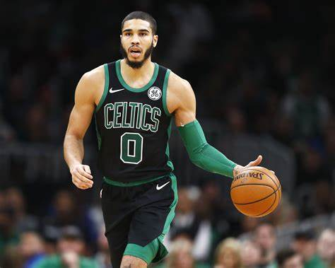

Site Logo

Basketball
Michael Jordan
Kobe Bryant

Stephen Curry
Jayson Tatum
Basketball is a fast-paced and highly dynamic sport that requires teamwork, skill, agility, and strategy. It is popular worldwide, with professional leagues such as the NBA (National Basketball Association) being among the most well-known and widely watched sports leagues."
Basketball is a fast-paced and highly dynamic sport that requires teamwork, skill, agility, and strategy. It is popular worldwide, with professional leagues such as the NBA (National Basketball Association) being among the most well-known and widely watched sports leagues."
Email address: delacuestablueaaron@gmail.com
Social media links: Facebook/Aaron De La Cuesta
Copyright: Blue Aaron T. De La Cuesta